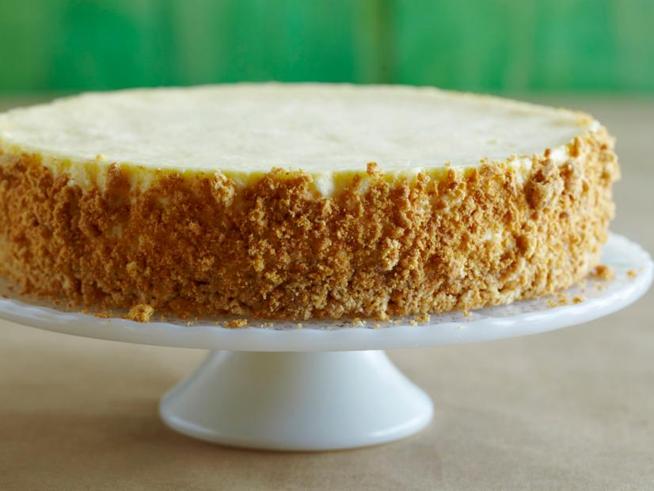

Sour Cream Cheesecake

Description
This recipe, courtesy of Alton Brown and The Food Network, will make
your loved ones cream themselves with ecstasy!
Ingredients
Crust:
- 8 tablespoons (1 stick) unsalted butter, melted, plus additional for brushing
the pan
- 18 whole graham crackers
- 1 tablespoon sugar
Filling:
- 1 tablespoon vanilla extract
- 2 large eggs
- 3 large egg yolks
- 1/3 cup heavy cream
- 3 (8-ounce) packages cream cheese, at room temperature
- 8 ounces sugar
- 10 1/2 ounces sour cream, at room temperature
Steps
- Preheat oven to 300 degrees F. Brush some of the melted butter around a
9-by-3-inch round cake pan. Adhere parchment to the bottom and the sides.
- In a small bowl, crumble the graham crackers, and combine with the remaining
melted butter and the sugar.
- Place two-thirds of the mixture into the bottom of the parchment-lined pan and
tap into place with the bottom of a water glass. When the floor of crumbs is
well packed, add the last third of the crumbs to the pan, then move the glass
in a circular motion to push the crumbs up the side of the pan forming a wall
1 1/2 inches high. As the wall forms, begin rolling the glass around the inside
of the pan to pack the wall into place.
- Bake the crust for 15 minutes, then cool for 10 minutes before filling. Reduce
oven temperature to 250 degrees F.
- Combine the vanilla, eggs, egg yolks, and cream in a small bowl and set
aside.
- In the bowl of a stand mixer fitted with the paddle attachment, beat the cream
cheese with the sugar for 1 minute on low speed. Scrape down the bowl, add the
sour cream, and mix on low for another 30 seconds. Scrape the bowl again, boost
the speed to medium, and beat until lump-free, 2 to 3 minutes.
- With the mixer running, slowly pour in the egg mixture, stopping every now and
then to scrape down the bowl. When the mixture is homogenous, pour the filling
into the cooled crust.
- Line a roasting pan with a kitchen towel. Place the cheesecake to one side of
the roasting pan, and pour boiling water in the other side. Center the
cheesecake in the roasting pan and bake in the oven for 2 hours. Turn the oven
off and open the door for 1 minute. Close the door for 1 1/2 hours.
- Remove the cheesecake from the water bath and place in the refrigerator for 6
hours to completely cool before serving. Do not attempt to remove the water
bath with the cheesecake in it from the oven, unless you like water in your
cheesecake.
- When ready to serve, place the entire cake pan into a hot water bath for about
15 seconds. Run a small offset spatula around the cheesecake to free the
parchment and remove it. Place a piece of wax paper atop the cake and invert a
large plate or the bottom of a spring-form pan on top of it. Flip the whole
cheesecake over and remove the cake pan. Remove the parchment paper and place
a cardboard cake circle or large plate on the bottom of the cake. Flip the
whole thing over again and remove the wax paper.
- To slice, place your knife (the longest and thinnest blade you’ve got) into a
hot water bath and wipe dry each time you make a pass through the cake. Cut
into 12 slices.